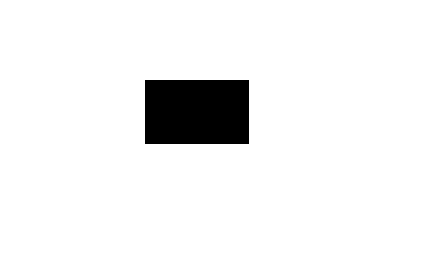
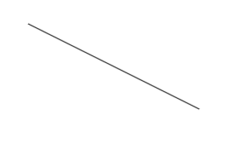
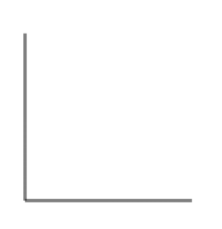
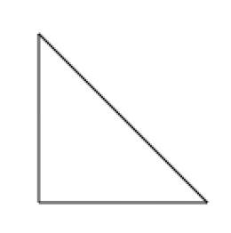
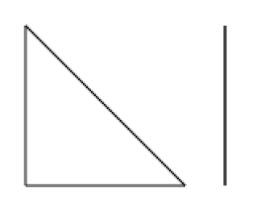
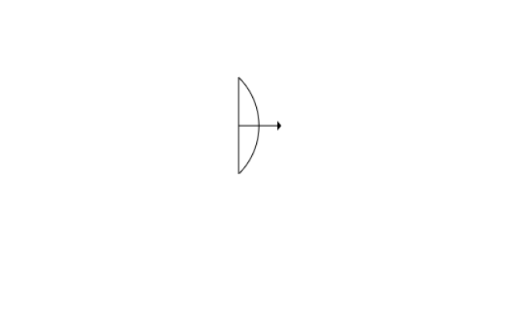
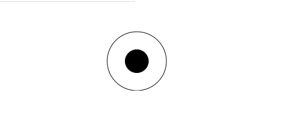

Maintenant que nous savons implémenter un canevas, nous allons voir comment construire des formes géométriques et tracer des lignes.
Les coordonnées x et y d'une page HTML se basent sur une grille dont les points 0,0 se situent en haut à gauche de la page. Donc si x et y sont égaux à 10, le point sera situé à 10 pixels du haut gauche de la page.
Un canevas fonctionne sur le même principe.
Il existe 3 fonctions permettant d'écrire des rectangles :
See the Pen Untitled by OpenSpirit (@OpenSpirit) on CodePen.
Pour construire d'autres formes géométriques que des rectangles, il faut les construire en reliant des points de tracés. On appelle cela un trajet. Il est constitué de plusieurs segments, dont le dernier point rejoint le premier. Ces segments peuvent être de toutes formes (droits, incurvés, etc.).
Pour réaliser un trajet, il faut l'initialiser avec la fonction beginPath(), et la méthode moveTo(x, y) permettra d'établir le point de départ de notre forme.
Les fonctions les plus couramment utilisées pour construire des lignes sont lineTo(x, y) qui définit une ligne droite, et arcTo(x1, y1, x2, y2, radius) définissant une ligne courbe.
Si le dernier point n'a pas fermé notre objet, il faudra terminer la forme par la fonction closePath(), qui créera une ligne droite vers ce point.
See the Pen Untitled by OpenSpirit (@OpenSpirit) on CodePen.
On va pouvoir dessiner toutes sortes de figures en dessinant plusieurs lignes à la suite dans le canevas. L’une des figures les plus simples à créer est le triangle.
Pour dessiner plusieurs lignes à la suite, il suffit d’utiliser plusieurs fois lineTo() : les coordonnées du point défini par la première méthode lineTo() serviront de point de départ pour la ligne tracée par le deuxième appel à la méthode lineTo() et etc.
See the Pen Untitled by OpenSpirit (@OpenSpirit) on CodePen.
Ajout de la commande closePath() pour relier le premier et le dernier point.
See the Pen Untitled by OpenSpirit (@OpenSpirit) on CodePen.
Plusieurs tracés dans un même canvas
See the Pen Untitled by OpenSpirit (@OpenSpirit) on CodePen.
Construire une courbe n'est pas aisé et demandera souvent plusieurs essais et un peu de pratique. La méthode arcTo(x1, y1, x2, y2, radius) prend en paramètres deux points de contrôle et un radius.
Les points de contrôle forment un angle correspondant aux tangentes des deux extrémités de la courbe. Le premier point de contrôle est relié au point de départ et construit la première tangente, le second point de contrôle est relié au premier et crée la deuxième tangente. Le radius déterminera la courbure de l'arc.
Avant de coder une forme géométrique, il peut être intéressant de la dessiner sur une feuille quadrillée pour avoir les repères.
Il existe plusieurs méthodes pour créer des arcs avec l'API Canvas. Ces méthodes se trouvent dans la documentation.
See the Pen Untitled by OpenSpirit (@OpenSpirit) on CodePen.
Pour créer un cercle dans un canevas, on utilise la méthode arc(x, y, rayon, angle de départ, angle de fin). Pour créer un cercle entier, la valeur de l'angle de départ doit être de 0 et celle de l'angle de fin égale à Math.PI * 2.
See the Pen Untitled by OpenSpirit (@OpenSpirit) on CodePen.
